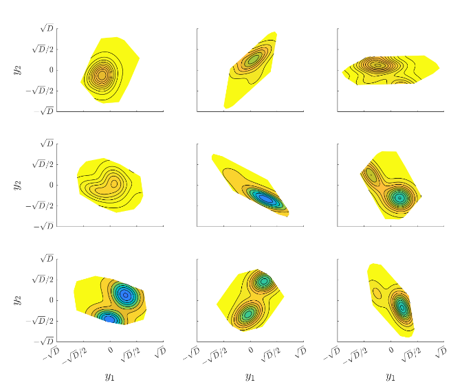

Principal Research Scientist
Department of War SMART Scholar
brandonlgusto@protonmail.com
My interests are in computational fluid dynamics, multi-fidelity surrogate modeling and optimization, and development of scientific software for high-performance computing applications.
Last updated July 2, 2026
Harbor seals use hydrodynamic signatures to track prey. It is suspected that the unique undulated geometry of their vibrissa is responsible for their capabilities. Incompressible wall-resolved large eddy simulation of a bio-inspired undulated cylinder is performed at Re = 2,400. The undulations disrupt the alternating vortex shedding pattern seen from straight cylinders, giving a large reduction in RMS lift for passive vortex-induced-vibration suppression.
Iso-surfaces of the Q-criterion colored by spanwise vorticity. The undulations break up the spanwise-coherent vortex tubes that drive periodic lift on a smooth cylinder.
Reference: W. Hanke et al., "Harbor seal vibrissa morphology suppresses vortex-induced vibrations." Journal of Experimental Biology, vol. 213, no. 15, 2010.
Bayesian optimization is a sample-efficient approach to optimizing expensive-to-evaluate black-box functions, but standard methods suffer from the curse of dimensionality. This work extends random embedding Bayesian optimization to leverage multi-fidelity information sources.

Nine random embeddings with dimension 2 of a 6-dimensional test function. Each embedding reveals a different 2D slice through the high-dimensional landscape.
Type Ia supernovae serve as "standard candles" for measuring cosmic distances, yet their explosion mechanism remains incompletely understood. This project ran the largest parameter-space exploration of deflagration-to-detonation transition (DDT) to date — 27,791 direct numerical simulations — combined with neural network classifiers to predict detonation formation from hotspot configurations.
Simulating reactive flows with shocks, flames, and detonations requires resolving thin reaction zones embedded in much larger domains. HAMR combines block-structured adaptive mesh refinement with wavelet-based multiresolution analysis, which gives mathematically rigorous smoothness indicators for refinement — more reliable than gradient-based criteria for stiff reactive systems. In smooth regions, expensive flux calculations are replaced with high-order interpolation, cutting computational cost without sacrificing accuracy.
HAMR applied to the Hawley-Zabusky problem: a shock impinging on an oblique material interface. The adaptive mesh tracks shock fronts and developing baroclinic vorticity while coarsening in smooth regions.
Validated on interacting blast waves, the Hawley-Zabusky problem, cellular detonation, and 3D reactive turbulence. Compared to uniform-grid simulations at equivalent effective resolution, HAMR achieves substantial speedups while keeping errors within prescribed tolerances.
Publication: B. Gusto and T. Plewa, "A hybrid adaptive multiresolution approach for the efficient simulation of reactive flows." Computer Physics Communications, vol. 274, 2022.
© 2026 Brandon Gusto. All rights reserved.